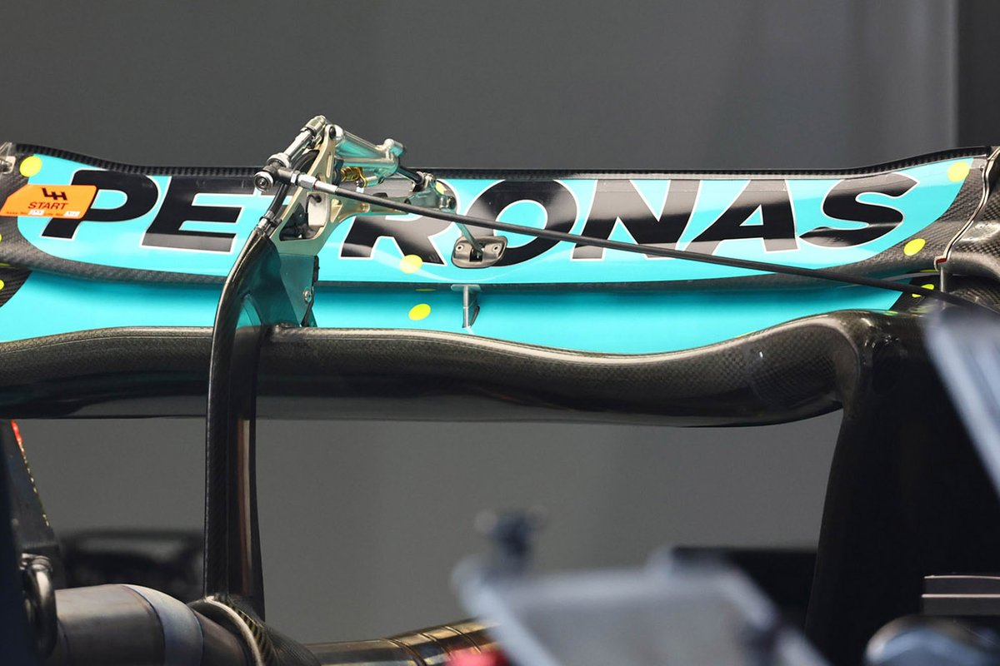
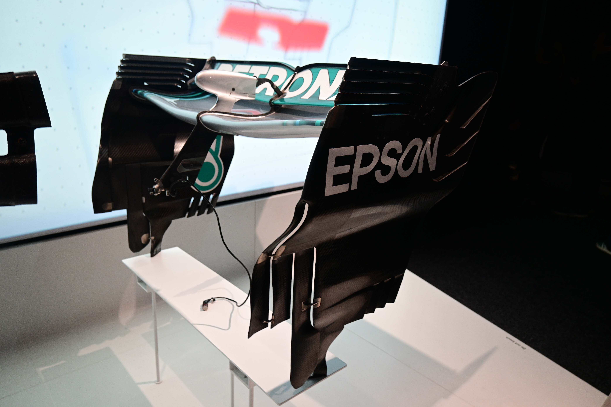
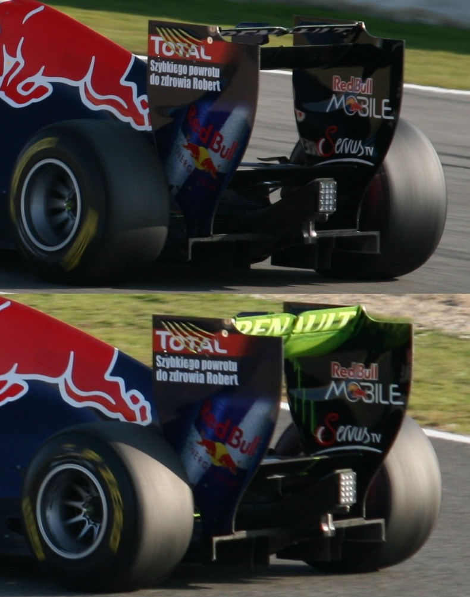

Five parts. Several angry team principals. Now on Etzi.
DRS Actuator | Brabham Fan | F2002 Chassis | McLaren Pedal | Macarena Wing
R 45 000
Demo stock available: 3 items

Mercedes W13 DRS actuator and linkage with its cover removed, 2022. Photo: Giorgio Piola / Motorsport.com. Picture source.

Mercedes W09 rear-wing installation on display; a DRS system example. Photo: Hullian111. CC BY-SA 4.0. Picture source.

Red Bull RB7 DRS open above and closed below, 2011; system comparison. Photo: Gil Abrantes; derivative work (crop and merge): Sasha Krotov. CC BY 2.0. Picture source.
A DRS actuator moves the rear-wing flap between its closed and open positions. Opening the flap reduces aerodynamic drag, helping the car travel faster along a straight.
This listing represents an earlier-generation F1 DRS mechanism. The gallery shows different historic DRS examples, including a mechanism close-up and rear-wing context pictures. These are not three views of one exact actuator.
Read the technical background.
| Information | Details |
|---|---|
| System | Drag Reduction System (DRS) |
| Location | Rear-wing mechanism |
| Era | Before the 2026 active-aero regulations |
| Purpose | Moves the DRS rear-wing flap |
| Product code (demo) | ETZI-001 |
| Price (demo) | R 45 000 |
| Stock (demo) | 3 items |